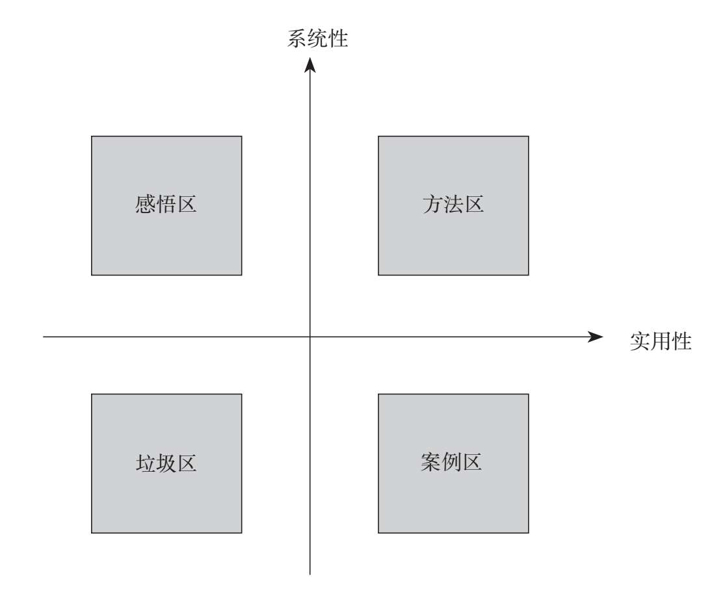

当下，我们每天都被铺天盖地的信息包围、裹挟、轰炸，而我们又不自觉地在海量的信息中徘徊，大脑仿佛不用费劲思考，就可以轻松获得一种满足感，以为自己掌握了足够多的知识。
但是，当我们冷静下来仔细思考时，就会发现这些碎片化信息，就像我们储存的一堆汽车零件，它们种类丰富，有发动机、车轮、方向盘、座椅等等。当你信心满满地以为自己能开到时速120公里，事实却是，因为这些零件没有经过专业组装，所以汽车根本无法发动。试问，不能跑的汽车零件和废品有什么区别？认真回忆起来，很多时候，这些我们日夜接触的碎片化内容，除了带给我们短暂的新鲜感和愉悦感，并没有真正增长我们的知识，提升我们的能力，更没有改变我们的生活。因此，我们没有得到真正的成长和收获，能力也没有得到提升，生活状态自然也没有什么改变。
美国著名未来学家阿尔文·托夫勒在其所著《第三次浪潮》一书中曾这样描述：“这是一个碎片化的时代，信息碎片化，受众碎片化，媒体碎片化。”不可否认的是，除适用于传播语境之外，碎片化也已经成为描述当前中国社会学习语境的一个形象性说法。
这种信息碎片化的现象其实自古有之。如果你翻开《论语》便会发现，《论语》本身也属于碎片式结构，每一小段文字都独立成篇，你只要读懂和记住其中的某一句或几句就能变成有效的知识。“学而不思则罔，思而不学则殆”“三人行，必有我师焉；择其善者而从之，其不善者而改之”是很多人自幼背诵过的语录。而放眼古今中外，王阳明的《传习录》、柏拉图的《理想国》、木心的《文学回忆录》……这种以收集他人碎片化语录成书的著作不胜枚举，这些信息碎片的存在并没有影响其传承。这说明碎片化的知识本身没有问题，问题也许出在我们自己身上。
科学研究表明，人脑在信息加工过程中会形成记忆信息流和回忆信息流 ,两种信息流的信息质量都可以通过调节人脑信息加工的强度加以控制。更进一步讲，所谓信息碎片化，实质上是指认知系统的碎片化。无序的认知系统会将碎片化信息视为彼此之间毫无关联的一堆“杂物”；而有序的认知系统则会像一名专业的汽车组装工，将各类碎片化信息变“碎”为宝，按照发动机、传动系、制动系、转向系配件进行专业组装，从而信心满满地开出120公里的时速。
如果以饮食为例，碎片化信息相当于品种繁多、营养和风味各不相同的菜肴，垃圾食品、健康主食、营养副食应有尽有。如果细嚼慢咽，我们很容易辨别每道菜的独特味道，甄别每道菜的营养价值；但是，如果将所有菜混在一起狼吞虎咽，我们往往连吃下的是什么都不清楚，更别提食之有味以及健康饮食了。所以，碎片化信息对我们所造成的真正困扰在于：还没有品尝到每道菜的味道，思考如何有序搭配出既有营养又有特色的一日三餐，就被杂乱无序的大量菜品占据了味觉。
但是，我们“吃”进去的碎片化信息并非完全没有价值。比起系统化学习，碎片化内容或许不够深入、不成体系，但它具有即时性、多元性和丰富性的特点。况且由于工作时间的限制、工作压力的束缚，大部分职场成年人很难有整块的时间进行系统学习，在这种情况下，与其一味排斥，不如寻求掌控之法。只要处理得当，我们完全可以将碎片化信息聚沙成塔、集腋成裘。
我们对于信息碎片化的困扰，其实与超市经营者遇到的问题一样：铺天盖地的碎片知识就像超市中琳琅满目、种类繁多、不计其数的货物，如果不进行归类整理，整齐陈列，定期盘点，顾客必然懒得找也找不着，最后导致商品难以售出。所以我们完全可以借鉴“超市经营法”对碎片化信息进行有效管理。
超市是如何管理并经营种类繁多的货品的呢？通过研究其经营模式我们可以发现，超市经营一共分为两步：第一步是“归类”，将杂乱的货品整齐地摆放在不同片区，能让人一目了然，方便快捷地找到所需物品；第二步是“盘库”，有针对性地统计哪些区域货品卖得好需要补货，哪些卖得不好可以考虑下架，哪些需要提升货物品质，进而有目标地优化超市货品和库存。碎片化信息的整理升级，也可以借鉴“超市经营法”分两步走：第一步“归类”，第二步“盘库”。
第一步：“归类”，建立井然有序的“碎片化信息超市”。超市经营者通常会将超市划分为酒水、生鲜、熟食、散货、日化等区域，然后将货品井井有条地摆放到各个区域中。同理，我们对于碎片化信息的分类，也可以根据信息的系统性和实用性，将其划分为四大片区：“垃圾区”“案例区”“感悟区”和“方法区”。除垃圾区以外，案例区、感悟区、方法区都是有用信息，只是它们的特点不同而已。

垃圾区：堆放无用又零碎的信息
垃圾区堆放着大量无用又零碎的信息，比如那些充斥在我们朋友圈、微博、各类App和日常聊天中的八卦新闻、社交动态、娱乐播报、心灵鸡汤、明星动向以及各种来源不明、道听途说的新闻资讯等都应该丢入这个区域。判断这些内容和信息有没有价值非常简单：它还值不值得我们再看第二遍？如果不值得，那就果断丢入垃圾区。对于垃圾区信息的处理方式也非常简单，你只需坚持一个原则——舍弃。
案例区：存储有用但零碎的信息
案例区存放着我们收到的有用但零碎的信息，包括商业案例、名人故事、旅行攻略、心理学实验、操作指南等。简单来说，只要是针对某些具体问题的案例，或者针对某些经历的分享等，我们都可以放入案例区。
针对案例区的信息，我们的处理方式是给它们贴上“商品标签”。因为这些信息虽然有用，但我们很可能暂时用不上，真要使用时又找不到。所以，我们要做的就是给这些信息“贴上标签”，以备他日不时之需。具体操作方法是把案例中的关键词提取出来，关键词的个数可以不限。
但是，“碎片化信息超市”应该选址在哪里呢？比如，我们在知乎网站上看到一篇很喜欢的《西班牙旅游攻略》，希望将它存放到案例区以备日后使用，问题是存在哪里合适呢？虽然知乎网站有自己的收藏系统，但并不是所有我们喜欢的案例都来自知乎，它们还可能来自樊登读书、微信公众号、得到、虎嗅、豆瓣等App，我们不可能每次需要使用信息时，都大费周章地打开所有平台搜索一遍。所以，我们需要建立一个属于自己的总数据库，将所有知识储存在这个数据库中，以备使用时能够立即检索。这其实便是为我们的“信息超市”选址，这个地址可以是有道云笔记、幕布、石墨、印象笔记等，符合我们的使用习惯即可。
为“信息超市”选好地址后，我们可以采用两种方式保存这个案例。
第一种：复制案例的链接，然后将链接命名为我们的关键词——“西班牙旅游攻略”，这种方式的优点是占用空间少，但是一旦原链接失效或删除就没用了。
第二种：将案例内容导出为PDF文件，并将PDF文件命名为我们的关键词——“西班牙旅游攻略”。这样我们就不怕文件失效或删除了，现在各个平台、网页导出PDF文件都非常方便。
通过为商品贴上标签——关键词，当我们需要查找相关资料时，只需去数据库检索关键词即可，这种方法既简单又高效。
感悟区：存储对知识的感悟和思考
感悟区存放着我们对知识的感悟和思考。当我们看到某个案例或新闻后，大脑或多或少会产生一些思考和感悟，如果不立即记录下来，很可能就会快速遗忘。所以，为思考和感悟专门开辟出一个区域是很有必要的。
对碎片化信息的思考可以借鉴我在前文介绍过的“X思考模型”，我们可以询问自己两个问题：第一，这些知识可以解释其他问题和现象吗？第二，如何将这些知识运用到工作和生活中？
假设我们学到了一个与犯罪心理学相关的概念——破窗效应，即如果在一幢房子里，有一扇窗户破了并且没有被及时补上，那么其他窗户也会莫名其妙地被人打破。我们现在可以演示一下如何使用“X思考模型”对这个概念进行思考：
首先，这个概念可以用来解释其他问题和现象吗？我们可能会想到“每逢佳节胖三斤”，就是因为我们面对美食时没能控制住第一口，所以越来越没有节制；坚持跑步的人，遇到下雨天不跑了，那么即便第二天天晴，他也有可能不再跑了；公司第一个上班迟到的人如果没有受到惩罚，接下来就会有越来越多的人迟到……
其次，我们应该怎么运用这些知识呢？很简单，反其道而行之，告诫自己千万要警惕第一扇“破窗”的出现，因为人一旦放任自己一次，就会有之后的无数次。例如，想要减肥就要控制住第一口大鱼大肉，想要规律作息就要控制住第一次熬夜刷手机；企业管理者也要学会适当小题大做、杀鸡儆猴。
方法区：存储有用且系统的方法
方法区摆放着我们在碎片化信息中邂逅的一些有用又系统的方法。由于时间有限，我们当时学得不深、不全，也不系统，需要单独保存起来，再运用整块时间进行集中、深入学习。
对于“方法区”的知识，我们同样还是要运用“商品标签”的方法进行关键词标注，方便我们查找、温习和再次学习。比如Pr、Ae等软件“小白”入门系统课程、Python自学教程等，它们烦琐复杂，理解难度大，需要反复学习，深入消化，才能将它们内化成我们能力的一部分。
至此，我们的“碎片化信息超市”就建好了。这个“超市”里整整齐齐地被划分为垃圾区、案例区、感悟区、方法区四大区域，上架的知识虽然琳琅满目，却井然有序。
第二步：“盘库”，有针对性地盘活升级“碎片化信息超市”。碎片化信息的最大弊端是：大部分人只是被动地接受碎片化信息，被淹没在铺天盖地的零碎知识中，却没有根据自身需求主动构建个人知识系统。我们通过“归类”划片区，建立了井然有序的“碎片化信息超市”，现在超市开张了，怎样将它经营得风生水起，扎扎实实为自己所用呢？我们可以从两个方面借鉴超市经营的“盘库”技巧。
第一，“按需进货”。所谓按需进货，就是按照我们的学习目标，有针对性地去充实我们的案例区、感悟区和方法区。要做到目标明确，有的放矢，而不是漫无目的，这里看看，那里瞧瞧。
假设你近期的学习目标是学会视频剪辑，那么你就要有意识地搜索、积累视频剪辑的优秀案例、素材和方法。把剪辑的优秀案例、视频素材提取关键词放在案例区，再把系统的《视频剪辑教程》放在方法区，用整块的时间进行集中学习，还要反复思考：这些案例、素材吸引人的地方在哪里？怎样运用这些成熟的剪辑方法？并且将这些思考放入“感悟区”。这些方法都可以帮助我们有的放矢地补充“超市存货”。
第二，“产品升级”。所谓产品升级，就是要不断更新迭代，让案例区和想法区的内容升华到方法区，从而把碎片化内容上升为自身的能力。
比如，电影《无名之辈》在开头运用了上下黑幕同时向中间收缩的剪辑手法，这个方法在电影中取得了很好的效果，因为镜头中间是一个长长的走道，收缩到最后正好凸显了走道和进入走道的人物。那么，这个剪辑方法是不是可以迁移到我们的短视频开篇之中呢？通过思考，我发现可以找一个像公路、堤坝等比较长的建筑或者物体，从远处拍摄，再运用这个剪辑技巧，就可以达到类似不错的效果。就这样，一个案例区的素材，通过想法区的思考升级成了方法区的能力，完成了产品升级。
“盘库”让我们有的放矢，“补充知识存货”，完成知识“更新升级”，它是有意识地扩充知识广度，增加知识深度。对“知识超市”的分片区“归类”和不断“盘库”，必将让知识数据库成为专属于我们的宝库。
海量信息时代，面对超量的碎片化信息，我们是学无所获，还是变“碎”为宝？这取决于我们自身是否具备管理知识的能力。“超市经营法”的“归类”和“盘库”技巧，在知识管理上可以帮助我们井然有序，“按需补货”，并且及时更新自己的“知识超市”。当然，世界上并没有什么“武功秘籍”或“独门心法”能够让我们在一夜之间脱胎换骨，盘活“知识超市”最关键的一步还是要我们自己留心挑选，认真经营。